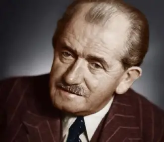
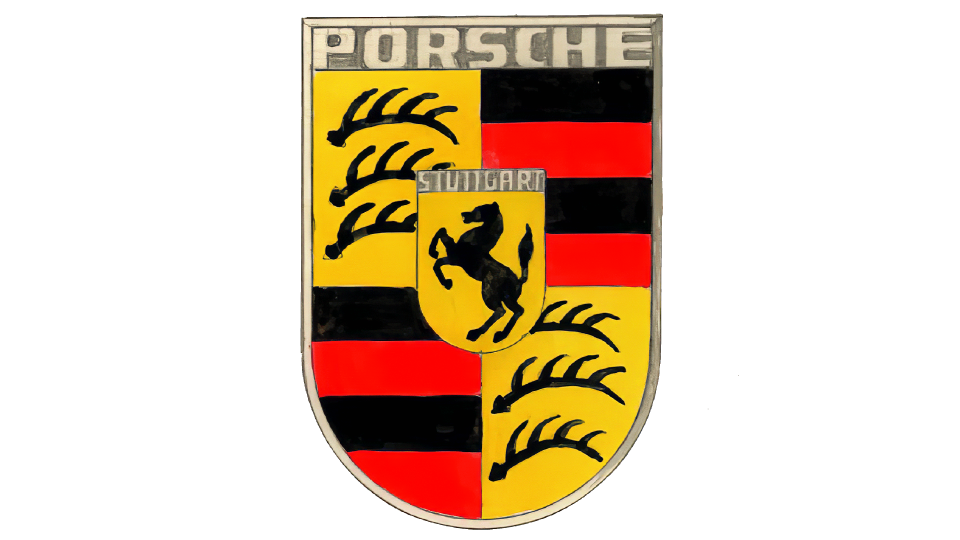
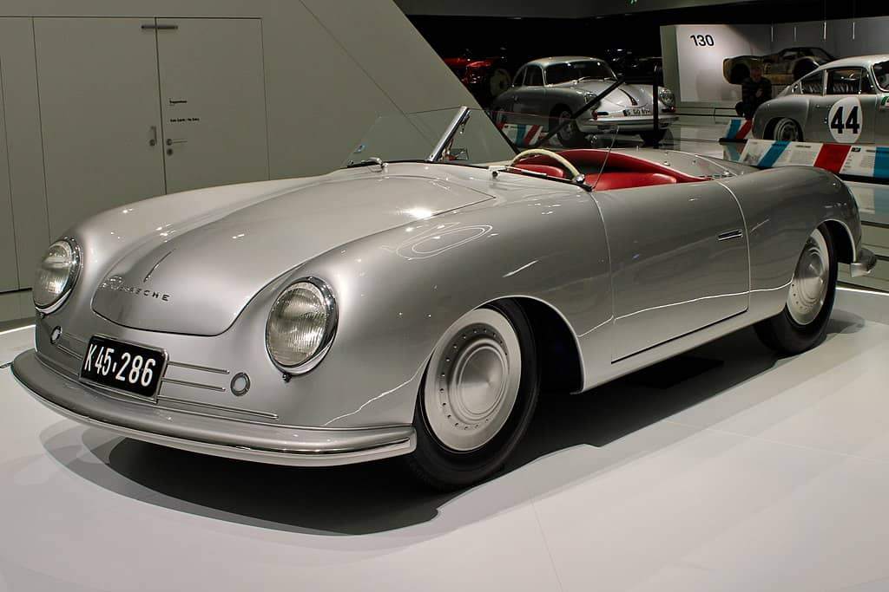

In an age when most of its competitors have been absorbed into larger manufacturers, Porsche remains a staunchly — and profitably — independent maker of high-performance sportscars. The Porsche name has become synonymous with sports cars and racecars because that is what company founders Ferdinand Porsche and his son Ferdinand ("Ferry") set out to build when they first set up shop with 200 workers in 1948.
The senior Porsche, whose engineering experience included Daimler-Benz, established an independent design and engineering firm in 1931 and designed the Volkswagen Beetle. He brought a half-century of experience with innovation, from a turn-of-the-century four-wheel drive gasoline/electric hybrid vehicle to the virtually unbeatable Auto Union Grand Prix cars of the 1930s.
The younger Porsche helped grow the new company and was instrumental in designing the first Porsche sportscar, the 356. Though sporting just 40 horsepower from a rear-mounted, slightly souped-up Beetle engine, the first Porsche quickly made its mark with agile handling, as well as attributes almost unknown among sportscars of the day — comfort and reliability.
Ferdinand Porsche (born September 3, 1875, Maffersdorf, Bohemia, Austria-Hungary [now in Liberec, Czech Republic]—died January 30, 1951, Stuttgart, West Germany) was an Austrian automotive engineer who designed the popular Volkswagen car.
Porsche became general director of the Austro-Daimler Company in 1916 and moved to the Daimler Company in Stuttgart in 1923. He left in 1931 and formed his own firm to design sports cars and racing cars. Porsche later became deeply involved in Adolf Hitler’s project for a “people’s car” and, with his son Ferdinand, known as Ferry, was responsible for the initial design of the Volkswagen in 1934.

It started when Porsche and Ottomar Domnick, a Stuttgart doctor and original Porsche customer, organised a design competition among German art academies in 1951. Although the prize pot was set at 1,000 Deutsche Mark, none of the submitted designs managed to win them over. Instead, another idea piqued the interest of Ferry Porsche… and it would come from New York City, the place where modern marketing, advertising and brand awareness was born.

It started when Porsche and Ottomar Domnick, a Stuttgart doctor and original Porsche customer, organised a design competition among German art academies in 1951. Although the prize pot was set at 1,000 Deutsche Mark, none of the submitted designs managed to win them over. Instead, another idea piqued the interest of Ferry Porsche… and it would come from New York City, the place where modern marketing, advertising and brand awareness was born.
Porsche became general director of the Austro-Daimler Company in 1916 and moved to the Daimler Company in Stuttgart in 1923. He left in 1931 and formed his own firm to design sports cars and racing cars. Porsche later became deeply involved in Adolf Hitler’s project for a “people’s car” and, with his son Ferdinand, known as Ferry, was responsible for the initial design of the Volkswagen in 1934.
